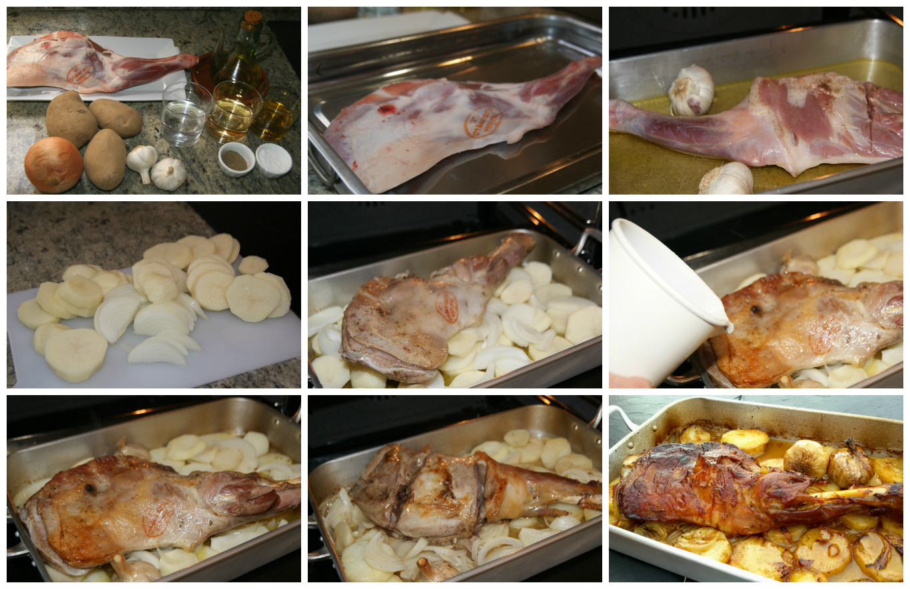

Ingredientes
- 4 piernas de cordero
- 1 cebolla
- 4 ajos
- Azafrán
- 1 hoja de laurel
- 1,5 dl de vino blanco
- 1 cucharadira de pimentón de La Vera
- 1 dl de vinagre blanco
- Miel de romero
- Aceite de oliva
- Sal
- - Pimienta

Pasos
Primer paso:
Precalentar el horno a 180º C. Pelar y picar la cebolla y los ajos. Poner una sartén al fuego con 4 cucharadas de aceite de oliva y freír la cebolla y los ajos a fuego suave hasta que empiece a dorarse. Añadir la pierna y dorar unos minutos
Segundo paso
Salpimentar la pierna de cordero. Añadir el azafrán, el laurel, el pimentón, la pimienta y el vino y dejar que reduzca un poco la salsa. Hornear 40 minutos, cuidando que la salsa no se pierda.
Tercer paso
Mezclar el vinagre con la miel y rociar la pierna 10 minutos antes de sacar el cordero del horno. Si la salsa no ha quedado suficientemente ligada, ponerla en un cazo y dejarla reducir hasta conseguir una consistencia melosa.